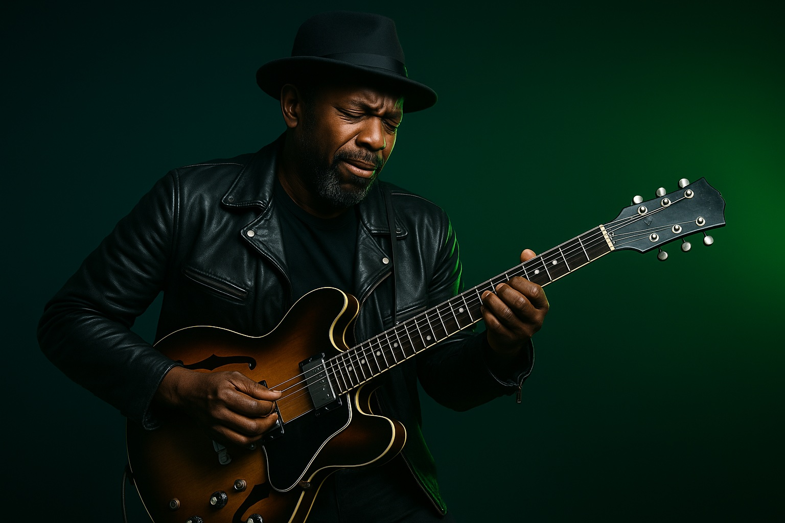

Artist launches an invite campaign
A release, drop, challenge or playlist creates a reason to invite.

FanFactors gives fans a reason to bring other fans into the ecosystem. Invite codes, access passes, campaign links and FanScore rewards help artists grow with measurable community momentum.

The best music communities grow because fans bring people in. FanFactors gives that natural behavior structure, visibility and reward.
A release, drop, challenge or playlist creates a reason to invite.
Each fan can share a tracked code, link or challenge entry.
Invited fans enter through a rights-respecting listening experience.
FanScore, badges and artist-specific status can reward meaningful growth.
The dashboard shows which fans, communities and campaigns bring active supporters.
A FanFactors invite is more than a link. It says: I believe in this artist, I was here, and I helped build the movement.

The invite system helps artists understand which fans and campaigns create real, active, rights-respecting listeners.
“The most powerful marketing channel in music is still a real fan telling another real fan: you need to hear this.”
FanFactors ManifestoFanFactors invites can be tied to artist campaigns, fan storefronts, city challenges, early access, drops and FanScore boosts.
The call-to-rebels page gives the platform its strongest recruitment language.